Bumper - Rear
Print
Operation Code: 10.23.15-02
Removal
- Remove Centre High Mounted Stop Lamp (CHMSL). Refer to procedure.
- Apply tape to protect paintwork of adjoining panels before removing the bumper.
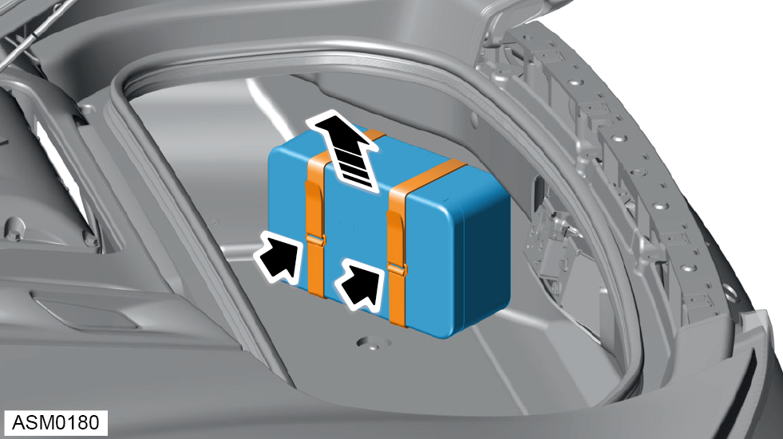
- Release straps (x2) and remove vehicle tool kit.
- Remove luggage floor carpet.
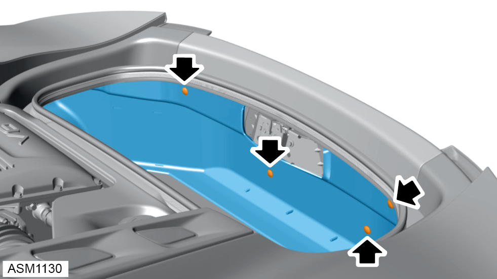
- Disengage clips (x8) securing rear boot trim to boot box.
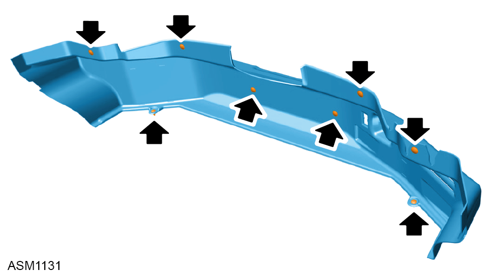
- Refer to illustration for trim clip locations.
- Remove rear boot trim.
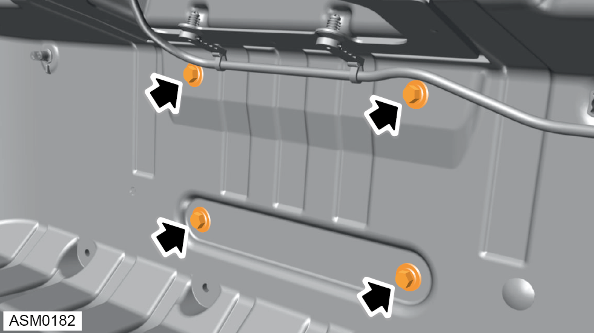
- Remove M6x30 bolts (x4) securing rear bumper to rear panel. Torque 5 Nm.
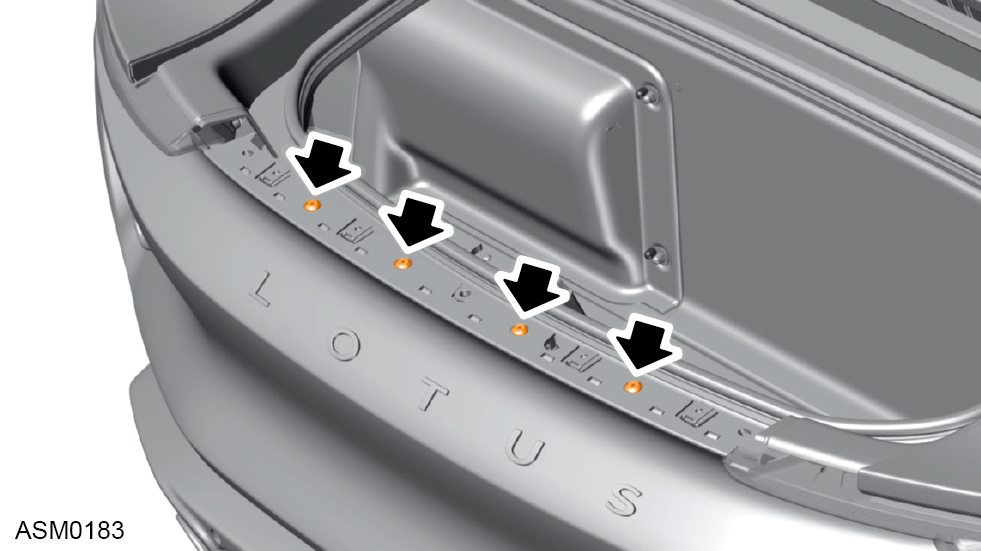
- Remove scrivets (x4) securing rear bumper to centre mounting.
- Remove diffuser - rear. Refer to procedure.
- Remove wheelarch liner - left side. Refer to procedure.
- Remove wheelarch liner - right side.
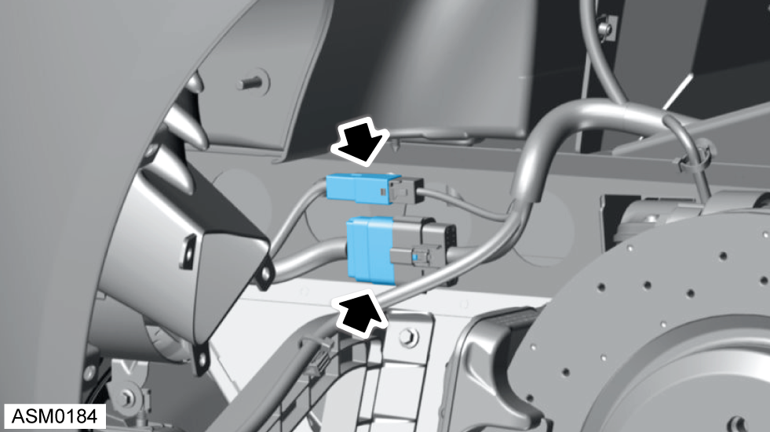
- Disconnect electrical connector (x2) connecting rear bumper harness.
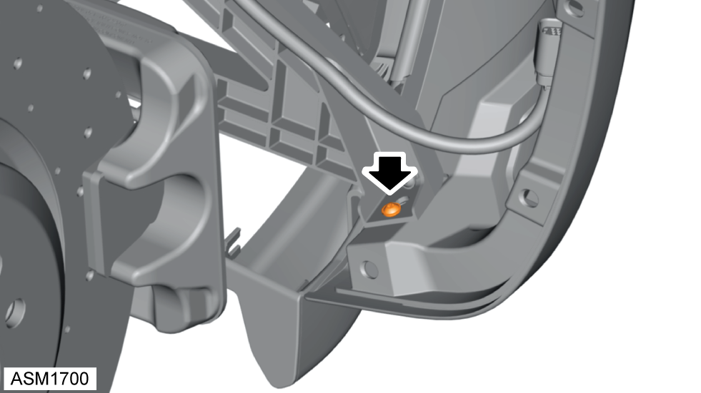
- Remove M5x20 screw securing rear bumper to left side rear bumper bracket. Torque 5 Nm.
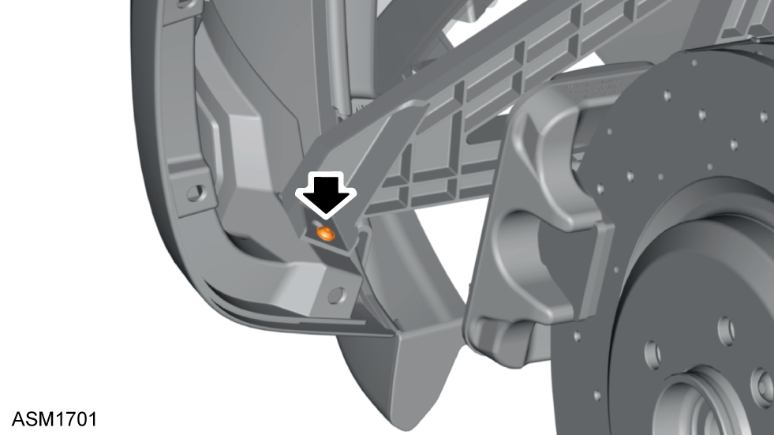
- Remove M5x20 screw securing rear bumper to right side rear bumper bracket. Torque 5 Nm.
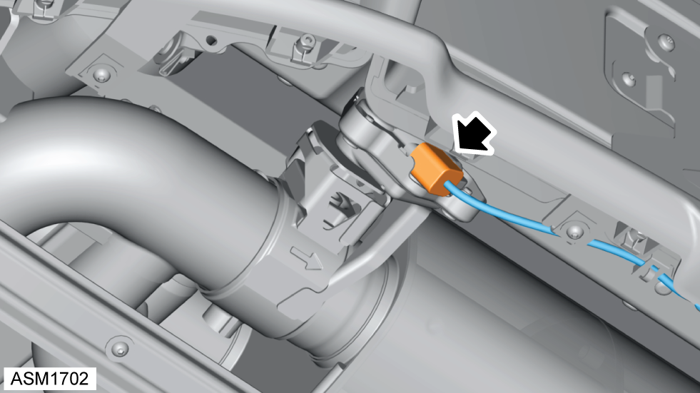
- Disengage electrical connector from exhaust valve.
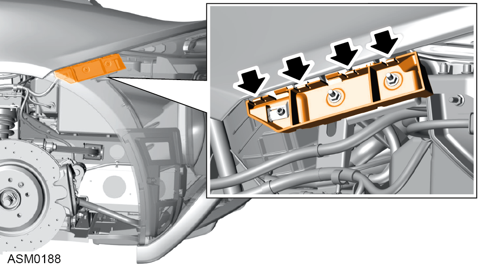
- Disengage clips (x4) securing rear bumper to left side rear bumper mounting.
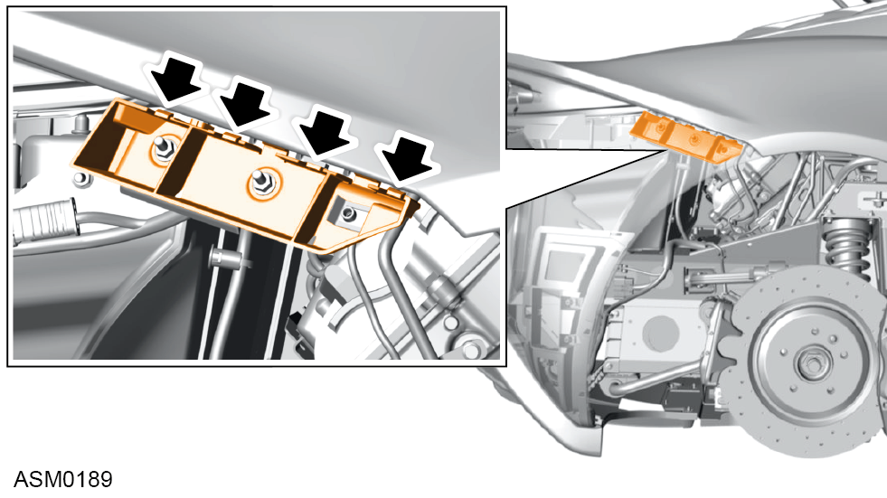
- Disengage clips (x4) securing rear bumper to right side rear bumper mounting.
- Using assistance pull rear bumper from mounts and away from vehicle.
NOTE: Make sure rear bumper harness does not catch when you remove the rear bumper.
Do not carry out further disassembly if component is removed for access only.
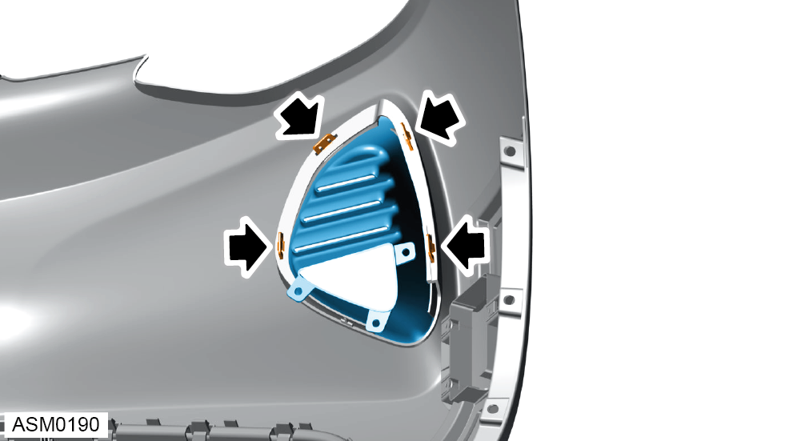
- Disengage clips (x4) securing left side air duct to rear bumper.
- Remove air duct from rear bumper.
- Repeat above procedure for right side air duct.
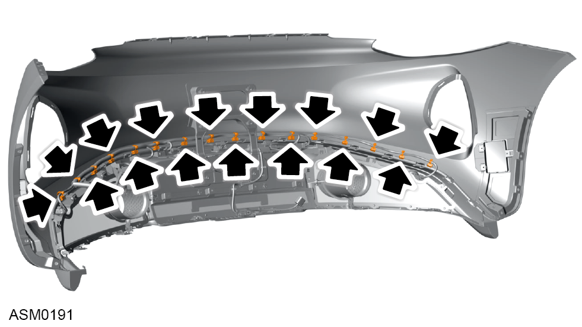
- Disengage harness clips (x16) securing rear bumper harness to bumper and move harness aside.
- Remove bolts (x2) securing licence plate to licence plate bracket and remove licence plate.
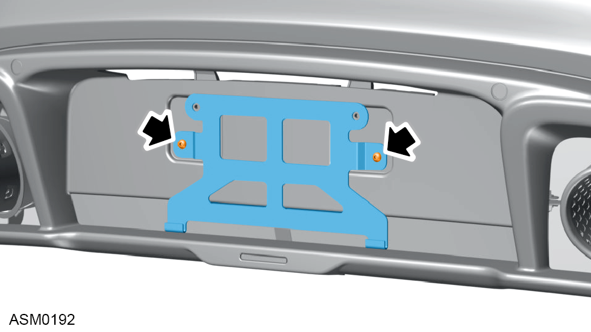
- Remove M6x20 bolts (x2) securing licence plate bracket to rear bumper. Torque 10 Nm.
- Remove licence plate bracket from rear bumper lower.
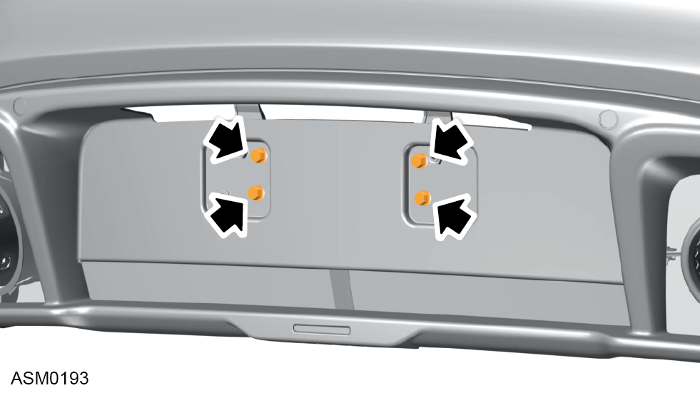
- Remove M6x20 bolts and washers (x4) securing bumper lower to bootbox. Torque 5 Nm.
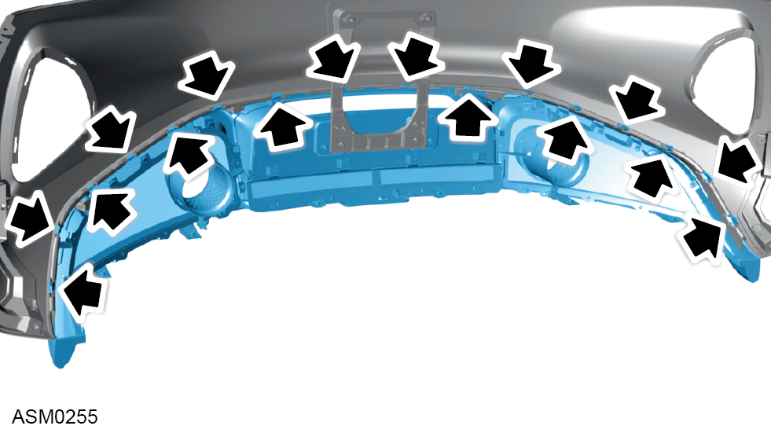
- Disengage clips (x16) securing rear bumper lower to rear bumper.
- Remove rear bumper from rear bumper lower.
Installation
- Installation is the reverse of removal procedure except for the following:
- Check fender gap and flush tolerances - see Alignment Specifications for Body Panels and Closures section.